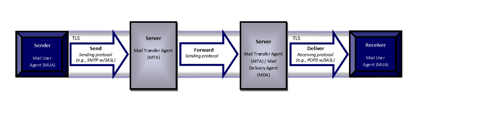

Email clients are user applications that provide functionality to send, receive, access and manage email.
The complexity of email content and email clients has grown over time.
Modern email clients can render HTML as well as plaintext,
and may include functionality to display common attachment formats, such as Adobe PDF and Microsoft Word documents.
Some email clients allow their functionality to be modified by users through the addition of add-ons.
Protocols have also been defined for communicating between email clients and servers.
Some clients support multiple protocols for doing the same task,
allowing them to be configured according to email server specifications.
The complexity
and rich feature set of modern email clients make them a target for attackers, introducing
security concerns. This document is intended to facilitate the improvement of email client
security by requiring use of operating system security services, cryptographic standards, and
environmental mitigations. Additionally, the requirements in this document define acceptable
behavior for email clients regardless of the security features provided by the operating
system.
This Module along with the Protection Profile for Application
Software ([AppPP]) provide a baseline set of Security Functional
Requirements (SFRs) for email clients running on any operating system regardless of the
composition of the underlying platform.
The terms email client and TOE are interchangeable in this document.
Figure 1:
Sending and Delivering Email over TLS
1.2 Terms
The following sections list Common Criteria and technology terms used in this document.
1.2.1 Common Criteria Terms
Common Criteria (CC)
Common Criteria for Information Technology Security Evaluation.
Base Protection Profile (Base-PP)
Protection Profile used to build a PP-Configuration.
Protection Profile (PP)
An implementation-independent set of security requirements for a category
of products.
Microsoft protocol for synchronizing messaging and calendar data between
mobile clients and email servers.
Add-on
Capabilities or functionality added to an application including plug-ins,
extensions or other controls.
Email Client
Application used to send, receive, access and manage email provided by an
email server. The terms email client and TOE are interchangeable in this
document.
IMAP
Internet Message Access Protocol - Protocol for an email client to retrieve
email from an email server over TCP/IP; IMAP4 defined in RFC 3501.
MAPI
Messaging Application Programming Interface - open specification used by
email clients such as Microsoft Outlook and Thunderbird; defined in [MS-OXCMAPIHTTP].
POP
Post Office Protocol - Protocol for an email client to retrieve email from
an email server over TCP/IP; POP3 defined in RFC 1939.
RPC
Remote Procedure Call - Protocol used by Microsoft Exchange to send/receive
MAPI commands; defined in MS-OXCRPC.
S/MIME
Secure/Multipurpose Internet Mail Extensions - S/MIME is used to sign
and/or encrypt messages at the request of the user upon sending email and to verify
digital signature on a signed message upon receipt.
SMTP
Simple Mail Transfer Protocol - Protocol for an email client to send email
to an email server over TCP/IP; SMTP defined in RFC 5321.
1.3 Compliant Targets of Evaluation
The Target of Evaluation (TOE) in this PP-Module is an email client application running on a desktop or mobile operating system.
This PP-Module describes the extended security functionality of email clients in terms of [CC].
As an extension of the ApSo PP, it is expected that the content of this PP-Module will be appropriately combined with the ApSo PP to include selection-based requirements in accordance with the
selections and/or assignments made, and any optional and/or objective components to include the following components at minimum:
FCS_CKM.1(1)
FCS_CKM_EXT.1
FCS_CKM.2
FCS_COP.1(1)
FCS_COP.1(2)
FCS_COP.1(3)
FCS_COP.1(4)
FCS_TLSC_EXT.1
FIA_X509_EXT.1
FIA_X509_EXT.2
An ST must identify the applicable version of the ApSo PP and this PP-Module in its conformance claims.
1.4 Use Cases
Email clients perform tasks associated primarily with
the following use case.
[USE CASE 1] Sending, receiving, accessing, managing and displaying email
Email clients are used for sending, receiving, viewing, accessing, managing
email in coordination with a mail server. Email clients can render HTML as well as
plaintext, and can display common attachment formats.
2 Conformance Claims
Conformance Statement
The Protection Profile for Application Software ([AppPP])
defines the baseline Security Functional Requirements (SFRs) and Security Assurance
Requirements (SARs) for application software products. This PP-Module serves to
extend the ApSo PP baseline with additional SFRs and associated Evaluation Activities
specific to an email client.
Evaluation Activities are the actions that the evaluator
performs in order to determine an email client's compliance to the SFRs.
This PP-Module conforms to Common Criteria [] for Information
Technology Security Evaluation, Version 3.1, Revision 4. It is CC Part 2 extended and CC
Part 3 conformant. In order to be conformant to this PP-Module, the ST must include all components in this PP-Module and the
associated ApSo PP that are:
unconditional (which are always required)
selection-based (which are required when certain selections are chosen in the
unconditional requirements)
and may include optional and/or objective components that are desirable but not
required for conformance.
In accordance with CC Part 1, dependencies are not included when they are addressed by other SFRs.
The evaluation activities provide adequate proof that any dependencies are also satisfied.
3 Security Problem Description
The security problem is described in terms of the threats that the email client is expected to address, assumptions about the operational environment, and any organizational security policies that it is expected to enforce.
This Extended Package does not repeat the threats, assumptions, and organizational security policies identified in the ApSo PP, though they all apply given the conformance and hence dependence of
this PP-Module on it.
Together the threats, assumptions and organizational security
policies of the ApSo PP and those defined in this PP-Module describe those addressed
by an email client as the Target of Evaluation.
Notably, email clients are particularly at risk from the Network Attack threat identified in the ApSo PP.
Attackers can send malicious email messages directly to users,
and the email client will render or otherwise process this untrusted
content.
3.1 Threats
The following threat is specific to email
clients, and represents an addition to those identified in the Base PP.
T.FLAWED_ADDON
Email client functionality can be extended with integration of third-party
utilities and tools. This expanded set of capabilities is made possible via the use of
add-ons. The tight integration between the basic email client code and the new
capabilities that add-ons provide increases the risk that malefactors could inject
serious flaws into the email client application, either maliciously by an attacker, or
accidentally by a developer. These flaws enable undesirable behaviors including, but not
limited to, allowing unauthorized access to sensitive information in the email client,
unauthorized access to the device's file system, or even privilege escalation that
enables unauthorized access to other applications or the operating system.
4 Security Objectives
This Extended Package adds SFRs to objectives
identified in the ApSo PP and describes an additional objective specific to this .
To address issues associated with malicious or flawed plug-ins or
extensions, conformant email clients implement mechanisms to ensure their integrity.
This includes verification at installation time and update. Addressed by: FPT_AON_EXT.1, FPT_AON_EXT.2
4.2 Security Objectives for the Operational Environment
Some text concerning security objectives.
And this is some text about this.
4.3 Security Objectives Rationale
5 Security Requirements
This chapter describes the security requirements which have to be fulfilled by the TOE.
Those requirements comprise functional components from Part 2 and assurance components from Part 3 of [CC].
The following notations are used:
Refinement operation (denoted by bold text): is used to add details to a
requirement, and thus further restricts a requirement.
Selection (denoted by italicized text): is used to select one or more options
provided by the [CC] in stating a requirement.
Assignment operation (denoted by italicized text): is used to assign a specific value to an unspecified parameter, such as the length of a password. Showing the value in square brackets indicates assignment.
Iteration operation: are identified with a number inside parentheses (e.g."(1)")
5.1 ApSo
PP Security Functional Requirements Direction
In a PP-Configuration the includes Application Software PP, the TOE is expected to rely on some of the security functions implemented by the application as a whole and evaluated against the Base-PP.
The following sections describe any modifications that the ST author must make to the SFRs
defined in the Base-PP in addition to what is mandated by section 5.4.
5.1.1
Unmodified SFRs
The SFRs listed in this section are defined in the PP and are relevant to the secure operation of the
TOE.
When testing the TOE, it is necessary to ensure these SFRs are tested specifically in
conjunction with the Email Client portion of the TOE.
The ST author may complete all selections and assignments in these SFRs without any
additional restrictions.
FCS_RBG_EXT.1
FCS_RBG_EXT.2
FCS_CKM_EXT.1
FCS_CKM.1(1)
FCS_CKM.1(2)
FCS_CKM.2
FCS_COP.1(1)
FCS_COP.1(2)
FCS_COP.1(3)
FCS_COP.1(4)
FCS_STO_EXT.1
FCS_TLSC_EXT.1
FCS_TLSC_EXT.2
FCS_TLSC_EXT.3
FCS_TLSC_EXT.4
FCS_TLSS_EXT.1
FCS_DTLS_EXT.1
FCS_HTTPS_EXT.1
FDP_DEC_EXT.1
FDP_NET_EXT.1
FDP_DAR_EXT.1
FIA_X509_EXT.1
FIA_X509_EXT.2
FMT_MEC_EXT.1
FMT_CFG_EXT.1
FMT_SMF.1
FPR_ANO_EXT.1
FPT_API_EXT.1
FPT_API_EXT.2
FPT_AEX_EXT.1
FPT_TUD_EXT.1
FPT_TUD_EXT.2
FPT_LIB_EXT.1
FPT_IDV_EXT.1
FTP_DIT_EXT.1
5.1.2
Modified SFRs
The SFRs listed in this section are defined in the Application Software Protection Profile and relevant to the secure operation of the TOE.
5.1.3
Additional SFRs
This section defines additional SFRs that must be added to the TOE boundary in order to implement the functionality in any PP-Configuration where the Application Software Protection Profile is claimed as the Base-PP.
5.1.3.1 Cryptographic Support (FCS)
FCS_SMIME_EXT.1 Secure/Multipurpose Internet Mail Extensions (S/MIME)
The email client shall implement both a sending and receiving S/MIME v3.2 Agent
as defined in RFC 5751, using CMS as defined in RFCs 5652, 5754, and 3565.
Application Note: The RFCs allow for an agent to be either sending or receiving,
or to include both capabilities. The intent of this requirement is to ensure that the
email client is capable of both sending and receiving S/MIME v3.2 messages.
The email client shall present the digestAlgorithm field with the following
Message Digest Algorithm identifiers
[selection: id-sha256, id-sha384, id-sha512] and no others as part of the S/MIME protocol.
The email client shall present the AlgorithmIdentifier field with the following
sha256withRSAEncryption and
[selection:
sha384WithRSAEncryption,
sha512WithRSAEncryption,
ecdsa-with-SHA256,
ecdsa-with-sha384,
ecdsa-with-sha512
] and no other algorithms as part of the S/MIME protocol.
Application Note: RFC 5751 mandates that receiving and sending agents support
RSA with SHA256. The algorithms to be tested in the evaluated configuration are
limited to the algorithms specified in the FCS_SMIME_EXT.1.4
selection. Any other algorithms implemented that do not comply with these requirements
should not be included in an evaluated email client.
The email client shall support use of different private keys (and associated
certificates) for signature and for encryption as part of the S/MIME protocol.
The email client shall implement mechanisms to retrieve certificates and
certificate revocation information
[selection: for each signed/encrypted message sent/received , [assignment: frequency]]
as part of the S/MIME protocol.
Application Note: In accordance with FIA_X509_EXT.1.1 [AppPP],
certificate revocation may use Certificate Revocation List (CRL) or Online Certificate
Status Protocol (OCSP). The email client can define how this mechanism behaves,
including whether it utilizes the underlying OS, but it is required that a mechanism
exist such that revocation status is supported and so that certificates can be
retrieved for sending/receiving messages. Frequency is configurable in FMT_MOF_EXT.1.1. In this requirement, frequency can be interpreted as a
one-time function with local storage, as a regularly scheduled retrieval, or as a
mechanism that requires manual intervention. If the retrieval mechanism is periodic in
nature, then the ST author will need to include an iteration of FCS
for storage of revocation information; storage of certificates is covered in FCS_CKM.
The import of certificates and certificate chains is not included in this requirement,
but is covered in FIA_X509 and FMT_MOF.
only store keys in non-volatile memory when wrapped as specified in
FCS_COP_EXT.2 unless the key meets any one of following
criteria:
[selection:
The plaintext key is not part of the key chain as specified in
FCS_KYC_EXT.1,
The plaintext key will no longer provide access to the encrypted
data after initial provisioning ,
The plaintext key is a key split that is combined as specified in
FCS_SMC_EXT.1, and the other half of the key split is
either
[selection: wrapped as specified in FCS_COP_EXT.2, derived and not stored in non-volatile memory ]
,
The plaintext key is stored on an external storage device for use as
an authorization factor
,
The plaintext key is used to wrap a key as specified in FCS_COP_EXT.2 that is already wrapped as specified in FCS_COP_EXT.2,
The plaintext key is the public portion of the key pair
]
].
Application Note: The plaintext key storage in non-volatile memory is allowed for
several reasons. If the keys exist within protected memory that is not user accessible
on the email client or operational environment, the only methods that allow it to play
a security relevant role is if it is a key split or providing additional layers of
wrapping or encryption on keys that have already been protected.
For volatile memory, the erasure shall be executed by a single
direct overwrite [selection:
consisting of a pseudo-random pattern using the email client's
RBG,
consisting of a pseudo-random pattern using the host platform's
RBG,
consisting of zeroes
].
,
For non-volatile storage, the erasure shall be executed by
[selection:
single,
three or more times
] overwrite of key data storage location consisting of
[selection:
a pseudo random pattern using the email client's RBG (as
specified in FCS_RBG_EXT.1 [AppPP],
a pseudo-random pattern using the host platform's ,
a static pattern
]
]
] that meet the following: [selection:
NIST SP800-88,
no standard
] for destroying all keying material and cryptographic security
parameters when no longer needed.
Application Note:
For the purposes of this requirement, keying material refers to
authentication data, passwords, symmetric keys, data used to derive keys, etc.
The destruction indicated above applies to each intermediate storage area for
key/cryptographic critical security parameters (i.e., any storage, such as memory
buffers, that is included in the path of such data) upon the transfer of the
key/cryptographic critical security parameter to another memory location.
]
to the data encryption/decryption key(s) using the following
method(s):
[selection:
utilization of the platform key storage,
utilization of platform key storage that performs key wrap with a
TSF provided key,
implement key wrapping as specified in FCS_COP_EXT.2,
implement key combining as specified in FCS_SMC_EXT.1
]
while maintaining an effective strength of
[selection:
128 bits,
256 bits
]
Application Note: Key Chaining is the method of using multiple layers of
encryption keys to ultimately secure the data encryption key. The number of
intermediate keys will vary. This applies to all keys that contribute to the ultimate
wrapping or derivation of the data encryption key; including those in protected areas.
This requirement also describes how keys are stored.
The email client shall display a notification of the S/MIME status of received
emails upon viewing.
Application Note: S/MIME status is whether the email has been signed or encrypted
and whether the signature verifies and the associated certificate validates. This
notification must at least display when the email content is viewed. Many
implementations also display the S/MIME status of each email when all emails are
viewed as a list.
The email client shall use S/MIME to sign, verify, encrypt, and decrypt
mail.
Application Note: Note that this requirement does not mandate that S/MIME be
used for all incoming/outgoing messages, or that the email client automatically
encrypt and/or sign/verify all sent or received messages. This requirement only
specifies that the mechanism for digital signature and encryption must be
S/MIME.
The email client shall prevent the establishment of a trusted communication
channel when the peer certificate is deemed invalid.
Application Note: Trusted communication channels include any of TLS performed by
the email client. Validity is determined by the certificate path, the expiration date,
and the revocation status in accordance with RFC 5280.
The email client shall be capable of performing the following management
functions, controlled by the user or administrator as shown:
X: Mandatory
O: Optional
Management Function
Administrator
User
Enable/disable downloading embedded objects globally
and by [selection: domain, sender, no other method]
OOptional
OOptional
Enable/disable plaintext only mode globally and by [selection: domain, sender, no other method]
OOptional
OOptional
Enable/disable rendering and execution of
attachments globally and by [selection: domain, sender, no other method]
OOptional
OOptional
Enable/disable email notifications
OOptional
OOptional
Configure a certificate repository for encryption
OOptional
OOptional
Configure whether to establish a trusted channel or
disallow establishment if the email client cannot establish a connection to
determine the validity of a certificate
OOptional
OOptional
Configure message sending/receiving to only use
cryptographic algorithms defined in FCS_SMIME_EXT.1
For these management functions, the term "Administrator" refers
to the administrator of a non-mobile device or the device owner of a mobile device.
The Administrator is responsible for management activities, including setting the
policy that is applied by the enterprise on the email client. The Administrator could
be acting remotely and could be the MTA administrator acting through a centralized
management console or dashboard. Applications used to configure enterprise policy
should have their own identification and authorization and additional security
requirements to ensure that the remote administration is trusted.
The intent of
this requirement is to allow the Administrator to configure the email client with a
policy that may not be over-ridden by the user. If the Administrator has not set a
policy for a particular function, the user may still perform that function.
Enforcement of the policy is done by the email client itself, or the email client and
the email client platform in coordination with each other.
The function to
configure whether to establish a trusted channel corresponds to the functionality
described in FIA_X509_EXT.2.2 ([AppPP]). The Administrator has the
option of accepting or rejecting all certificates that cannot be validated, accepting
a given certificate that cannot be validated, or not accepting a given certificate
that cannot be validated. Depending on the choice that the Administrator has made in
FIA_X509_EXT.2.2 ([AppPP]), the trusted connection will either be
allowed for all certificates that cannot be validated, disallowed for all certificates
that cannot be validated, allowed for a given certificate that cannot be validated, or
disallowed for a given certificate that cannot be validated.
If password or
passphrase authorization factors are implemented by the email client, then the
appropriate "change" selection must be included.
If the email client provides
configurability of the cryptographic functions (for example, key size), even if the
configuration is the form of parameters that may be passed to cryptographic
functionality implement on the email client platform, then "configure cryptographic
functionality" will be included, and the specifics of the functionality offered can
either be written in this requirement as bullet points, or included in the TSS.
If the email client does include a key recovery function, the
email client must provide the capability for the user to turn this functionality off
so that no recovery key is generated and no keys are permitted to be exported.
The email client shall include the capability to load [selection: trusted add-ons, no add-ons].
Application Note: FPT_AON_EXT.2 depends upon the selection
made here. If the email client does not include support for installing only trusted
add-ons, this requirement can be met by demonstrating the ability to disable all
support for add-ons as specified in FMT_MOF_EXT.1. Cryptographic
verification (i.e., trust) of add-ons is tested in FPT_AON_EXT.2.1
The email client shall communicate via the trusted channel for
[selection:
IMAP,
SMTP,
POP,
MAPI Extensions for HTTP,
MAPI/RPC,
ActiveSync,
[assignment: other protocol (reference RFC or specification)]
].
Application Note: FIA_SASL_EXT.1 depends upon the
selection(s) made here. For example, if POP is chosen, then FIA_SASL_EXT.1.2 shall be included in the ST.
Selections must include at least one sending and one receiving protocol. If the
assignment is used, the ST author must also include a reference for the protocol
(e.g., an RFC number).
A password/passphrase used to generate a password authorization factor shall
enable up to [assignment: positive integer of 64 or more] characters in
the set of
[selection:
upper case characters,
lower case characters,
numbers,
special characters: !, @, #, $, %, ^, &, *, (, ),
[assignment: other supported special characters]
]
and shall perform [Password-based Key Derivation Functions] in
accordance with a specified cryptographic algorithm
[selection:
HMAC-SHA-256,
HMAC-SHA-384,
HMAC-SHA-512
]
with
[assignment: positive integer of 4096 or more]
iterations, and output cryptographic key sizes of
[selection:
128 bits,
256 bits
]
that meet NIST SP 800-132.
Application Note:
The password/passphrase is represented on the host machine as a
sequence of characters whose encoding depends on the email client and the underlying
OS. This sequence must be conditioned into a string of bits that is to be used as a
key of equivalent size to the rest of the key chain.
This password/passphrase
must be conditioned into a string of bits that forms the submask to be used as input
into a key. Conditioning can be performed using one of the identified hash functions
or the process described in NIST SP 800-132; the method used is selected by the ST Author. SP 800-132 requires the use of a pseudo-random function (PRF)
consisting of HMAC with an approved hash function. The ST author
selects the hash function used, also includes the appropriate requirements for HMAC
and the hash function.
Appendix A of SP 800-132 recommends setting the iteration
count in order to increase the computation needed to derive a key from a password and,
therefore, increase the workload of performing a password recovery attack. However,
for this PP-Module, a minimum iteration count of 4096 is required in order
to ensure that twelve bits of security is added to the password/passphrase value. A
significantly higher value is recommended to ensure optimal security.
There are
two aspects of this component that require evaluation: passwords/passphrases of the
length specified in the requirement (at least 64 characters) are supported, and that
the characters that are input are subject to the selected conditioning function. These
activities are separately addressed in the tests below.
The email client shall create IVs in the following manner: [selection:
CBC: IVs shall be non-repeating,
CCM: IV shall be non-repeating,
XTS: No IV. Tweak values shall be non-negative integers, assigned
consecutively, and starting at an arbitrary non-negative integer,
GCM: IV shall be non-repeating. The number of invocations of GCM shall
not exceed 2^32 for a given secret key.
]
Application Note: FCS_IVG_EXT.1.1 specifies how the IV should be handled for each
encryption mode. CBC, XTS, and GCM are allowed for AES encryption of the data. AES-CCM
is an allowed mode for Key Wrapping.
The email client shall display the full Uniform Resource Identifier (URI) of any
embedded links.
Application Note: Embedded links are HTML URI objects which may have a tag (such
as a word, phrase, icon, or picture) that obfuscates the URI of the link. The intent
of this requirement is to de-obfuscate the link. The URI may be displayed as a
"mouse-over" event or may be rendered next to the tag.
The email client shall be capable of operating without storing persistent
information to the client platform with the following exceptions:
[selection: credential information, administrator provided configuration information, certificate revocation information, no exceptions].
Application Note: Any data that persists after the email client closes, including
temporary files, is considered to be persistent data. Satisfying this requirement
would require the use of a protocol such as IMAP or MAPI. It is not compatible with
POP.
The email client shall have a plaintext-only mode which disables the rendering
and execution of [selection:
HTML,
JavaScript,
[assignment: other embedded content types],
no embedded content types
].
Application Note: Plaintext only mode prevents the automatic downloading,
rendering and execution of images, external resources and embedded objects such as
HTML or JavaScript objects. FMT_MOF_EXT.1.1 addresses
configuration of this mode. The ST author must identify all content types supported by
the email client through selections and/or assignments. If the email client only
supports plaintext only mode, no embedded content types should be selected.
FPT_AON_EXT.2 Trusted Installation and Update for Add-ons
The email client shall [selection: provide the ability, leverage the platform] to provide a means to cryptographically verify add-ons using a digital
signature mechanism and [selection: published hash, no other functions]prior to installation and update.
The email client shall implement support for Simple Authentication and Security
Layer (SASL) that complies with RFC 4422.
Application Note: SASL is needed if the email implements SMTP to send messages.
Clients that do not use SMTP (e.g., ActiveSync or MAPI) would not need to implement
support for SASL.
The email client shall support the SMTP AUTH extension for the SASL mechanism.
Application Note: In order for an email client to support PKI X.509 Certificates
for POP3, IMAP and SMTP as required in this document, the client must support the
Simple Authentication and Security Layer (SASL) authentication method as described in
RFC 4422, the AUTH and CAPA extensions for POP3, as described in RFC 5034, the
AUTHENTICATION and CAPABILITY extensions for IMAP, as described in RFC 4959 and the
AUTH extension for SMTP, as described in RFC 4954.
use platform-provided functionality to perform Key Wrapping,
implement functionality to perform Key Wrapping
] in accordance with a specified cryptographic algorithm [selection:
AES Key Wrap,
AES Key Wrap with Padding,
RSA using the KTS-OAEP-basic scheme,
RSA using the KTS-OAEP-receiver-confirmation scheme,
ECC CDH
] and the cryptographic key size [selection:
128 bits (AES),
256 bits (AES),
2048 (RSA),
4096 (RSA),
256-bit prime,
modulus (ECC CDH),
384-bit prime modulus (ECC CDH)
] that meet the following: [selection:
"NIST SP 800-38F" for Key Wrap (section 6.2) and Key Wrap with Padding
(section 6.3),
"NIST SP 800-56B" for RSA using the KTS-OAEP-basic (section 9.2.3) and
KTS-OAEP-receiver-confirmation (section 9.2.4) scheme, "NIST SP 800-56A rev 2" for
ECC CDH (sections 5.6.1.2 and 6.2.2.2)
].
Application Note: In the first selection, the ST author chooses the entity that
performs the decryption/encryption. In the second selection, the ST author chooses the
method used for encryption:
Using one of the two AES-based Key Wrap methods
specified in NIST SP 800-38F;
Using one of the two the KTS-OAEP schemes
for RSA as described in NIST SP 800-56B (KTSOAEP-basic described in section
9.2.3
Using ECC CDH as described in NIST SP 800-56A section
6.2.2.2.
The third selection should be made to reflect the key size.
2048/4096 is used for the RSA-based schemes, while the size of the prime modulus is
used for ECC-based schemes. Support for 256-bit AES key sizes will be required for
products entering evaluation after Quarter 3, 2015. Based on the method(s) selected,
the last selection should be used to select the appropriate reference(s).
5.2 TOE Security Functional Requirements
This module does not define any mandatory SFRs.
6 Consistency Rationale
6.1 Application Software Protection Profile
6.1.1
Consistency of TOE Type
If this PP-Module is used to extend the ApSo PP, the TOE type for the overall TOE is still an
Software-based Application.
The TOE boundary is simply extended to include the Email Client functionality that is built into the Application so that additional security functionality is claimed within the scope of the TOE.
6.1.2
Consistency of Security Problem Definition
The threats defined by this PP-Module (see section 3.1) supplement those defined in the
ApSo PP as follows:
PP-Module Threat
Consistency Rationale
T.FLAWED_ADDON
The threat of a user installing a flawed add on is consistent with .
6.1.3
Consistency of Objectives
The objectives for the TOEs are consistent with the ApSo PP based on the following rationale:
PP-Module Threat
Consistency Rationale
O.MANAGEMENT
This objective is consistent with ApSo.
O.PROTECTED_STORAGE
This objective is consistent with ApSo..
O.PROTECTED_COMMS
This objective is consistent ApSo..
O.ADDON_INTEGRITY
This objective is consistent ApSo.
This PP-Module does not define any objectives for the TOE's operational environment.
6.1.4
Consistency of Requirements
This PP-Module identifies several SFRs from the
ApSo PP that are needed to support
Email Clients functionality.
This is considered to be consistent because the functionality provided by the
ApSo is being used for its intended purpose.
The PP-Module also identifies a number of modified SFRs from the
ApSo PP
as well as new SFRs that are used entirely to provide
Email Clients
The rationale for why this does not conflict with the claims
defined by the
ApSo PP are as follows:
PP-Module Requirement
Consistency Rationale
Modified SFRs
This PP-Module does not modify any requirements when the
ApSo PP is the base.
Additional SFRs
FCS_SMIME_EXT.1
This SFR defines how email messages are formatted when sent and received by the client.
It does not impact the ApSo PP functionality.
FCS_CKM_EXT.3
This SFR defines how keys and key material are saved by the email client. It does not impact the ApSo PP functionality.
FCS_CKM_EXT.4
This SFR defines how email messages are formated when sent and received by the client. It does not impact the ApSo PP functionality.
FCS_KYC_EXT.1
This SFR defines how email clients maintain key chains.
It does not impact the ApSo PP functionality.
FDP_NOT_EXT.1
This SFR defines the behavior an email client exhibits when a message is received.
It does not impact the ApSo PP functionality.
FDP_SMIME_EXT.1
This SFR defines the format an email client shall use as output for cryptographic operations.
It does not impact the ApSo PP functionality.
FIA_X509_EXT.3
This SFR defines the format an email client shall use for certificates to perform encryption and authentication.
It does not impact the ApSo PP functionality.
FMT_MOF_EXT.1
This SFR defines a specific set of management functions for an email client.
It does not impact the ApSo PP functionality.
FPT_AON_EXT.1
This SFR defines what types of plugins an email client may use.
It does not impact the ApSo PP functionality.
FTP_ITC_EXT.1
This SFR defines which channels for an email client must be considered trusted.
It does not impact the ApSo PP functionality.
Mandatory SFRs
This PP-Module does not define any mandatory requirements.
Optional SFRs
FCS_CKM_EXT.5
FCS_SAG_EXT.1
This SFR defines how clients generate salts for cryptographic operations.
It does not impact functionality described by the ApSo PP.
FCS_NOG_EXT.1
This SFR defines how clients generate nonces for cryptographic operations.
It does not impact functionality described by the ApSo PP.
FCS_IVG_EXT.1
This SFR defines how clients generate IVs for cryptographic operations.
It does not impact functionality described by the ApSo PP.
FDP_NOT_EXT.2
This SFR defines how clients display URIs in embedded links
It does not impact functionality described by the ApSo PP.
FDP_PST_EXT.1
This SFR defines how clients display URIs in embedded links
It does not impact functionality described by the ApSo PP.
FDP_REN_EXT.1
This SFR defines functionality to display message content.
It does not impact functionality described by the ApSo PP.
Selection-based SFRs
FPT_AON_EXT.2
This SFR defines how email clients to verify Add-Ons.
It does not impact functionality described by the ApSo PP.
FIA_SASL_EXT.1
This SFR defines an alternate method of transmitting messagess.
It does not impact functionality described by the ApSo PP.
FCS_SMC_EXT.1
This SFR defines how clients combine keys.
It does not impact functionality described by the ApSo PP.
FCS_COP_EXT.2
This SFR defines how clients wrap keys.
It does not impact functionality described by the ApSo PP.
Objective SFRs
This PP-Module does not define any objective requirements.
Appendix A - Optional SFRs
As indicated in the introduction to this PP-Module, the baseline requirements (those that must be
performed by the TOE or its underlying platform) are contained in the body of this PP-Module.
Additionally, there are three other types of requirements specified in Appendices A, B, and C.
The first type (in this Appendix) are requirements that can be included in the ST, but do not have to be in order for a TOE to claim conformance to this PP-Module.
The second type (in Appendix B) are requirements based on selections in the body of the PP-Module: if certain selections are made, then additional requirements in that appendix will need to be included. The third type (in Appendix C) are components that are not required in order to conform to this PP-Module, but will be included in the baseline requirements in future versions of this PP-Module, so adoption by VPN Client vendors is encouraged.
Note that the ST author is responsible for ensuring that requirements that may be
associated with those in Appendix A, Appendix B, and/or Appendix C but are not listed (e.g., FMT-type
requirements) are also included in the ST.
A password/passphrase used to generate a password authorization factor shall
enable up to [assignment: positive integer of 64 or more] characters in
the set of
[selection:
upper case characters,
lower case characters,
numbers,
special characters: !, @, #, $, %, ^, &, *, (, ),
[assignment: other supported special characters]
]
and shall perform [Password-based Key Derivation Functions] in
accordance with a specified cryptographic algorithm
[selection:
HMAC-SHA-256,
HMAC-SHA-384,
HMAC-SHA-512
]
with
[assignment: positive integer of 4096 or more]
iterations, and output cryptographic key sizes of
[selection:
128 bits,
256 bits
]
that meet NIST SP 800-132.
Application Note:
The password/passphrase is represented on the host machine as a
sequence of characters whose encoding depends on the email client and the underlying
OS. This sequence must be conditioned into a string of bits that is to be used as a
key of equivalent size to the rest of the key chain.
This password/passphrase
must be conditioned into a string of bits that forms the submask to be used as input
into a key. Conditioning can be performed using one of the identified hash functions
or the process described in NIST SP 800-132; the method used is selected by the ST Author. SP 800-132 requires the use of a pseudo-random function (PRF)
consisting of HMAC with an approved hash function. The ST author
selects the hash function used, also includes the appropriate requirements for HMAC
and the hash function.
Appendix A of SP 800-132 recommends setting the iteration
count in order to increase the computation needed to derive a key from a password and,
therefore, increase the workload of performing a password recovery attack. However,
for this PP-Module, a minimum iteration count of 4096 is required in order
to ensure that twelve bits of security is added to the password/passphrase value. A
significantly higher value is recommended to ensure optimal security.
There are
two aspects of this component that require evaluation: passwords/passphrases of the
length specified in the requirement (at least 64 characters) are supported, and that
the characters that are input are subject to the selected conditioning function. These
activities are separately addressed in the tests below.
The email client shall create IVs in the following manner: [selection:
CBC: IVs shall be non-repeating,
CCM: IV shall be non-repeating,
XTS: No IV. Tweak values shall be non-negative integers, assigned
consecutively, and starting at an arbitrary non-negative integer,
GCM: IV shall be non-repeating. The number of invocations of GCM shall
not exceed 2^32 for a given secret key.
]
Application Note: FCS_IVG_EXT.1.1 specifies how the IV should be handled for each
encryption mode. CBC, XTS, and GCM are allowed for AES encryption of the data. AES-CCM
is an allowed mode for Key Wrapping.
The email client shall display the full Uniform Resource Identifier (URI) of any
embedded links.
Application Note: Embedded links are HTML URI objects which may have a tag (such
as a word, phrase, icon, or picture) that obfuscates the URI of the link. The intent
of this requirement is to de-obfuscate the link. The URI may be displayed as a
"mouse-over" event or may be rendered next to the tag.
The email client shall be capable of operating without storing persistent
information to the client platform with the following exceptions:
[selection: credential information, administrator provided configuration information, certificate revocation information, no exceptions].
Application Note: Any data that persists after the email client closes, including
temporary files, is considered to be persistent data. Satisfying this requirement
would require the use of a protocol such as IMAP or MAPI. It is not compatible with
POP.
The email client shall have a plaintext-only mode which disables the rendering
and execution of [selection:
HTML,
JavaScript,
[assignment: other embedded content types],
no embedded content types
].
Application Note: Plaintext only mode prevents the automatic downloading,
rendering and execution of images, external resources and embedded objects such as
HTML or JavaScript objects. FMT_MOF_EXT.1.1 addresses
configuration of this mode. The ST author must identify all content types supported by
the email client through selections and/or assignments. If the email client only
supports plaintext only mode, no embedded content types should be selected.
Appendix B - Selection-based SFRs
As indicated in the introduction to this PP-Module, the baseline requirements (those that must be
performed by the TOE or its underlying platform) are contained in the body of this PP-Module.
There are additional requirements based on selections in the body of the PP-Module:
if certain selections are made, then additional requirements below will need to be included.
FPT_AON_EXT.2 Trusted Installation and Update for Add-ons
The email client shall [selection: provide the ability, leverage the platform] to provide a means to cryptographically verify add-ons using a digital
signature mechanism and [selection: published hash, no other functions]prior to installation and update.
The email client shall implement support for Simple Authentication and Security
Layer (SASL) that complies with RFC 4422.
Application Note: SASL is needed if the email implements SMTP to send messages.
Clients that do not use SMTP (e.g., ActiveSync or MAPI) would not need to implement
support for SASL.
The email client shall support the SMTP AUTH extension for the SASL mechanism.
Application Note: In order for an email client to support PKI X.509 Certificates
for POP3, IMAP and SMTP as required in this document, the client must support the
Simple Authentication and Security Layer (SASL) authentication method as described in
RFC 4422, the AUTH and CAPA extensions for POP3, as described in RFC 5034, the
AUTHENTICATION and CAPABILITY extensions for IMAP, as described in RFC 4959 and the
AUTH extension for SMTP, as described in RFC 4954.
use platform-provided functionality to perform Key Wrapping,
implement functionality to perform Key Wrapping
] in accordance with a specified cryptographic algorithm [selection:
AES Key Wrap,
AES Key Wrap with Padding,
RSA using the KTS-OAEP-basic scheme,
RSA using the KTS-OAEP-receiver-confirmation scheme,
ECC CDH
] and the cryptographic key size [selection:
128 bits (AES),
256 bits (AES),
2048 (RSA),
4096 (RSA),
256-bit prime,
modulus (ECC CDH),
384-bit prime modulus (ECC CDH)
] that meet the following: [selection:
"NIST SP 800-38F" for Key Wrap (section 6.2) and Key Wrap with Padding
(section 6.3),
"NIST SP 800-56B" for RSA using the KTS-OAEP-basic (section 9.2.3) and
KTS-OAEP-receiver-confirmation (section 9.2.4) scheme, "NIST SP 800-56A rev 2" for
ECC CDH (sections 5.6.1.2 and 6.2.2.2)
].
Application Note: In the first selection, the ST author chooses the entity that
performs the decryption/encryption. In the second selection, the ST author chooses the
method used for encryption:
Using one of the two AES-based Key Wrap methods
specified in NIST SP 800-38F;
Using one of the two the KTS-OAEP schemes
for RSA as described in NIST SP 800-56B (KTSOAEP-basic described in section
9.2.3
Using ECC CDH as described in NIST SP 800-56A section
6.2.2.2.
The third selection should be made to reflect the key size.
2048/4096 is used for the RSA-based schemes, while the size of the prime modulus is
used for ECC-based schemes. Support for 256-bit AES key sizes will be required for
products entering evaluation after Quarter 3, 2015. Based on the method(s) selected,
the last selection should be used to select the appropriate reference(s).
Appendix C - Objective SFRs
This section is reserved for requirements that are not currently prescribed by this PP-Module
but are expected to be included in future versions of the PP-Module.
Vendors planning on having evaluations performed against future products are encouraged
to plan for these objective requirements to be met.
This module does not define any objective SFRs.
Appendix D - Bibliography
Identifier
Title
[CC]
Common Criteria for Information Technology Security Evaluation -